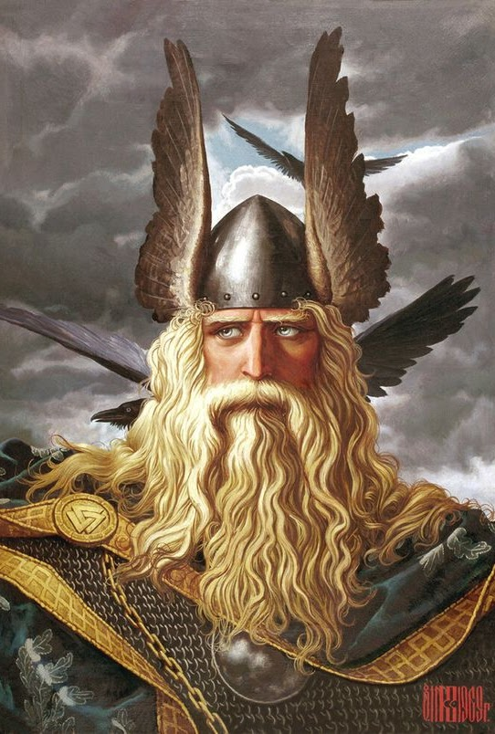

Скандинавська міфологія

Скандинавська міфологія подібна до вражаючої панорами, у якій девʼять світів взаємодіють та переплітаються, створюючи єдину гармонійну систему реальностей. Ця донаукова конструкція, пронизана оригінальністю, привертає увагу своєю рельєфністю опису та глибиною опрацювання.